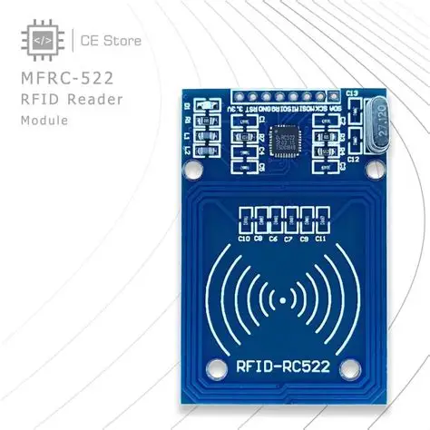

Identificação
| Nome do sensor | MFRC522 |
|---|---|
| Categoria | RFID / Identificação |
| Tipo de sinal | Digital — SPI (o CI também suporta I2C e UART) |
Conceito
O MFRC522 é um circuito integrado leitor/gravador de RFID (identificação por radiofrequência) desenvolvido pela NXP Semiconductors, que opera na faixa de 13,56 MHz e é compatível com o padrão ISO/IEC 14443A, incluindo os cartões MIFARE Classic. Comercializado principalmente na forma do módulo RC522 — acompanhado de um cartão e um chaveiro —, permite ler o identificador único (UID) de cada etiqueta e também gravar dados em sua memória interna. É a base de praticamente todos os sistemas de crachá de aproximação, controle de acesso e rastreabilidade de peças de baixo e médio custo.

Princípio de funcionamento
O leitor gera um campo eletromagnético alternado de 13,56 MHz através de uma antena em espiral impressa na própria placa. As etiquetas (tags) são passivas: não possuem bateria. Quando entram nesse campo, a bobina da etiqueta capta energia por indução eletromagnética, alimentando seu microchip interno. Uma vez energizado, o chip responde modulando a carga sobre o campo do leitor — técnica conhecida como modulação de carga —, o que provoca pequenas variações detectadas pela antena do MFRC522 e interpretadas como dados. Todo o diálogo segue o protocolo ISO 14443A: o leitor solicita a presença de cartões, resolve colisões quando há mais de um no campo, seleciona um deles pelo UID e, se necessário, executa a autenticação de setor com uma chave de 6 bytes antes de liberar leitura ou gravação.
Principais especificações técnicas
| Frequência de operação | 13,56 MHz |
|---|---|
| Protocolos suportados | ISO/IEC 14443A e MIFARE Classic 1K/4K, Ultralight |
| Distância de leitura | 0 a 6 cm (varia com o tipo de etiqueta e da antena) |
| Tensão de alimentação | 2,5 V a 3,3 V (o módulo RC522 usa 3,3 V) |
| Corrente de operação | 13 mA a 26 mA (menos de 80 µA em modo de repouso) |
| Velocidade de transmissão | Até 848 kbit/s na interface aérea |
| Memória do cartão MIFARE 1K | 1 KB, dividida em 16 setores de 4 blocos |
| Segurança | Autenticação por chaves A e B de 6 bytes por setor |
| Temperatura de operação | -25 °C a +85 °C |
Tipo de sinal
Digital — SPI (o CI também suporta I2C e UART)
Nos módulos RC522, a comunicação com o microcontrolador é feita por SPI, usando as linhas SCK, MOSI, MISO, SDA (que funciona como chip select) e RST, com velocidade de até 10 Mbit/s. O circuito integrado MFRC522 também é capaz de operar em I2C e UART, mas essas interfaces exigem alterações de hardware na placa e raramente são usadas nos módulos comuns. Um ponto crítico de instalação: o módulo é alimentado com 3,3 V e não tolera 5 V no pino VCC, embora seus pinos de dados costumem aceitar sinais de 5 V vindos de um Arduino Uno.
Aplicações industriais e IoT
- Controle de acesso a áreas restritas e salas de máquinas por crachá;
- Identificação do operador antes de liberar a operação de uma máquina;
- Rastreabilidade de peças, ferramentas e paletes na linha de produção;
- Controle de estoque e movimentação de almoxarifado;
- Registro de ponto e apontamento de produção;
- Gestão de ferramentaria com liberação e devolução automatizadas.
Exemplo de utilização em um projeto
Na entrada de uma célula robotizada, um leitor MFRC522 é integrado ao sistema de intertravamento. O operador aproxima o crachá e o microcontrolador compara o UID lido com a lista de matrículas autorizadas e treinadas para aquele equipamento. Se o crachá for válido, o painel é liberado, a identidade do operador fica registrada com data e hora e a informação é enviada ao sistema MES junto com os dados de produção do turno. Crachás não autorizados mantêm a máquina bloqueada e geram um registro de tentativa de acesso indevido, o que atende tanto a requisitos de segurança quanto de rastreabilidade da qualidade.
#include <SPI.h>
#include <MFRC522.h>
#define PINO_SDA 10
#define PINO_RST 9
MFRC522 leitor(PINO_SDA, PINO_RST);
const String CRACHA_AUTORIZADO = "A3 F2 1B 04";
const int PINO_LIBERACAO = 7;
void setup() {
Serial.begin(9600);
SPI.begin();
leitor.PCD_Init();
pinMode(PINO_LIBERACAO, OUTPUT);
Serial.println("Aproxime o cracha do leitor...");
}
void loop() {
if (!leitor.PICC_IsNewCardPresent()) return;
if (!leitor.PICC_ReadCardSerial()) return;
String uid = "";
for (byte i = 0; i < leitor.uid.size; i++) {
uid += String(leitor.uid.uidByte[i], HEX);
if (i < leitor.uid.size - 1) uid += " ";
}
uid.toUpperCase();
Serial.println("UID lido: " + uid);
if (uid == CRACHA_AUTORIZADO) {
Serial.println("Acesso liberado.");
digitalWrite(PINO_LIBERACAO, HIGH);
delay(3000);
digitalWrite(PINO_LIBERACAO, LOW);
} else {
Serial.println("Acesso negado!");
}
leitor.PICC_HaltA();
}